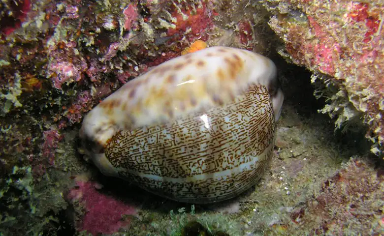
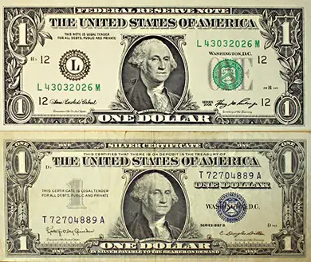
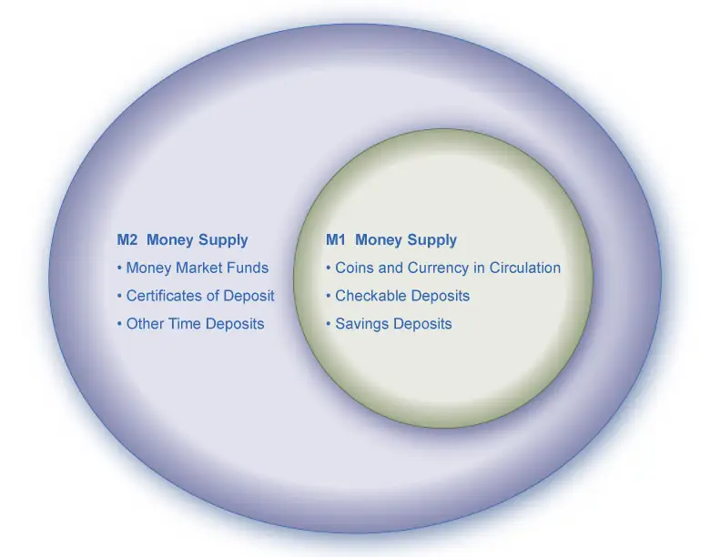
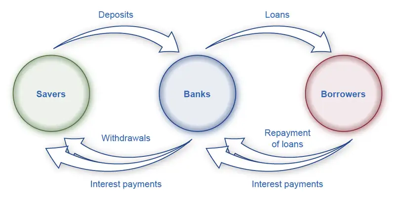
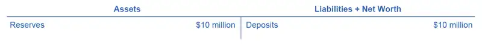
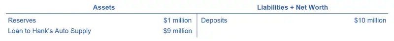
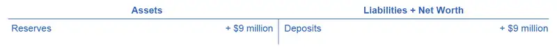
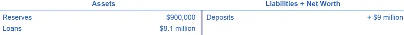
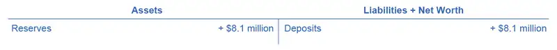

Chapter 27: Money and Banking¶
Introduction¶

Bring It Home: The Many Disguises of Money: From Cowries to Crypto
Here is a trivia question: In the history of the world, what item did people use for money over the broadest geographic area and for the longest period of time? The answer is not gold, silver, or any precious metal. It is the cowrie, a mollusk shell found mainly off the Maldives Islands in the Indian Ocean. Cowries served as money as early as 700 B.C. in China. By the 1500s, they were in widespread use across India and Africa. For several centuries after that, cowries were the means for exchange in markets including southern Europe, western Africa, India, and China: everything from buying lunch or a ferry ride to paying for a shipload of silk or rice. Cowries were still acceptable as a way of paying taxes in certain African nations in the early twentieth century.
What made cowries work so well as money? First, they are extremely durable—lasting a century or more. As the late economic historian Karl Polyani put it, they can be “poured, sacked, shoveled, hoarded in heaps” while remaining “clean, dainty, stainless, polished, and milk-white.” Second, parties could use cowries either by counting shells of a certain size, or—for large purchases—by measuring the weight or volume of the total shells they would exchange. Third, it was impossible to counterfeit a cowrie shell, but dishonest people could counterfeit gold or silver coins by making copies with cheaper metals. Finally, in the heyday of cowrie money, from the 1500s into the 1800s, governments, first the Portuguese, then the Dutch and English, tightly controlled collecting cowries. As a result, the supply of cowries grew quickly enough to serve the needs of commerce, but not so quickly that they were no longer scarce. Money throughout the ages has taken many different forms and continues to evolve even today with the advent of cryptocurrency. What do you think money is?
Chapter Outline: Introduction to Money and Banking
In this chapter, you will learn about:
- Defining Money by Its Functions
- Measuring Money: Currency, M1, and M2
- The Role of Banks
- How Banks Create Money
The discussion of money and banking is a central component in studying macroeconomics. At this point, you should have firmly in mind the main goals of macroeconomics from Welcome to Economics!: economic growth, low unemployment, and low inflation. We have yet to discuss money and its role in helping to achieve our macroeconomic goals.
You should also understand Keynesian and neoclassical frameworks for macroeconomic analysis and how we can embody these frameworks in the aggregate demand/aggregate supply (AD/AS) model. With the goals and frameworks for macroeconomic analysis in mind, the final step is to discuss the two main categories of macroeconomic policy: monetary policy, which focuses on money, banking and interest rates; and fiscal policy, which focuses on government spending, taxes, and borrowing. This chapter discusses what economists mean by money, and how money is closely interrelated with the banking system. Monetary Policy and Bank Regulation furthers this discussion.
27.1 Defining Money by Its Functions¶
Learning Objectives
By the end of this section, you will be able to:
- Explain the various functions of money
- Contrast commodity money and fiat money
Money for the sake of money is not an end in itself. You cannot eat dollar bills or wear your bank account. Ultimately, the usefulness of money rests in exchanging it for goods or services. As the American writer and humorist Ambrose Bierce (1842–1914) wrote in 1911, money is a “blessing that is of no advantage to us excepting when we part with it.” Money is what people regularly use when purchasing or selling goods and services, and thus both buyers and sellers must widely accept money. This concept of money is intentionally flexible, because money has taken a wide variety of forms in different cultures.
Barter and the Double Coincidence of Wants¶
To understand the usefulness of money, we must consider what the world would be like without money. How would people exchange goods and services? Economies without money typically engage in the barter system. Barter—literally trading one good or service for another—is highly inefficient for trying to coordinate the trades in a modern advanced economy. In an economy without money, an exchange between two people would involve a double coincidence of wants, a situation in which two people each want some good or service that the other person can provide. For example, if an accountant wants a pair of shoes, this accountant must find someone who has a pair of shoes in the correct size and who is willing to exchange the shoes for some hours of accounting services. Such a trade is likely to be difficult to arrange. Think about the complexity of such trades in a modern economy, with its extensive division of labor that involves thousands upon thousands of different jobs and goods.
Another problem with the barter system is that it does not allow us to easily enter into future contracts for purchasing many goods and services. For example, if the goods are perishable it may be difficult to exchange them for other goods in the future. Imagine a farmer wanting to buy a tractor in six months using a fresh crop of strawberries. Additionally, while the barter system might work adequately in small economies, it will keep these economies from growing. The time that individuals would otherwise spend producing goods and services and enjoying leisure time they spend bartering.
Functions for Money¶
Money solves the problems that the barter system creates. (We will get to its definition soon.) First, money serves as a medium of exchange, which means that money acts as an intermediary between the buyer and the seller. Instead of exchanging accounting services for shoes, the accountant now exchanges accounting services for money. The accountant then uses this money to buy shoes. To serve as a medium of exchange, people must widely accept money as a method of payment in the markets for goods, labor, and financial capital.
Second, money must serve as a store of value. In a barter system, we saw the example of the shoemaker trading shoes for accounting services. However, she risks having her shoes go out of style, especially if she keeps them in a warehouse for future use—their value will decrease with each season. Shoes are not a good store of value. Holding money is a much easier way of storing value. You know that you do not need to spend it immediately because it will still hold its value the next day, or the next year. This function of money does not require that money is a perfect store of value. In an economy with inflation, money loses some buying power each year, but it remains money.
Third, money serves as a unit of account, which means that it is the ruler by which we measure values. For example, an accountant may charge $100 to file your tax return. That $100 can purchase two pair of shoes at $50 a pair. Money acts as a common denominator, an accounting method that simplifies thinking about trade-offs.
Finally, another function of money is that it must serve as a standard of deferred payment. This means that if money is usable today to make purchases, it must also be acceptable to make purchases today that the purchaser will pay in the future. Loans and future agreements are stated in monetary terms and the standard of deferred payment is what allows us to buy goods and services today and pay in the future. Thus, money serves all of these functions— it is a medium of exchange, store of value, unit of account, and standard of deferred payment.
Commodity versus Fiat Money¶
Money has taken a wide variety of forms in different cultures. People have used gold, silver, cowrie shells, cigarettes, and even cocoa beans as money. Although we use these items as commodity money, they also have a value from use as something other than money. For example, people have used gold throughout the ages as money although today we do not use it as money but rather value it for its other attributes. Gold is a good conductor of electricity and the electronics and aerospace industry use it. Other industries use gold too, such as to manufacture energy efficient reflective glass for skyscrapers and is used in the medical industry as well. Of course, gold also has value because of its beauty and malleability in creating jewelry.
As commodity money, gold has historically served its purpose as a medium of exchange, a store of value, and as a unit of account. Commodity-backed currencies are dollar bills or other currencies with values backed up by gold or other commodities held at a bank. During much of its history, gold and silver backed the money supply in the United States. Interestingly, antique dollars dated as late as 1957, have “Silver Certificate” printed over the portrait of George Washington, as Figure 27.2 shows. This meant that the holder could take the bill to the appropriate bank and exchange it for a dollar’s worth of silver.

As economies grew and became more global in nature, the use of commodity monies became more cumbersome. Countries moved towards the use of fiat money. Fiat money has no intrinsic value, but is declared by a government to be a country's legal tender. The United States’ paper money, for example, carries the statement: “THIS NOTE IS LEGAL TENDER FOR ALL DEBTS, PUBLIC AND PRIVATE.” In other words, by government decree, if you owe a debt, then legally speaking, you can pay that debt with the U.S. currency, even though it is not backed by a commodity. The only backing of our money is universal faith and trust that the currency has value, and nothing more.
Link It Up
Watch this video on the “History of Money.”
27.2 Measuring Money: Currency, M1, and M2¶
Learning Objectives
By the end of this section, you will be able to:
- Contrast M1 money supply and M2 money supply
- Classify monies as M1 money supply or M2 money supply
Cash in your pocket certainly serves as money; however, what about checks or credit cards? Are they money, too? Rather than trying to state a single way of measuring money, economists offer broader definitions of money based on liquidity. Liquidity refers to how quickly you can use a financial asset to buy a good or service. For example, cash is very liquid. You can use your $10 bill easily to buy a hamburger at lunchtime. However, $10 that you have in your savings account is not so easy to use. You must go to the bank or ATM machine and withdraw that cash to buy your lunch. Thus, $10 in your savings account is less liquid.
The Federal Reserve Bank, which is the central bank of the United States, is a bank regulator and is responsible for monetary policy and defines money according to its liquidity. There are two definitions of money: M1 and M2 money supply. Historically, M1 money supply included those monies that are very liquid such as cash, checkable (demand) deposits, and traveler’s checks, while M2 money supply included those monies that are less liquid in nature; M2 included M1 plus savings and time deposits, certificates of deposits, and money market funds. Beginning in May 2020, the Federal Reserve changed the definition of both M1 and M2. The biggest change is that savings moved to be part of M1. M1 money supply now includes cash, checkable (demand) deposits, and savings. M2 money supply is now measured as M1 plus time deposits, certificates of deposits, and money market funds.
M1 money supply includes coins and currency in circulation—the coins and bills that circulate in an economy that the U.S. Treasury does not hold at the Federal Reserve Bank, or in bank vaults. Closely related to currency are checkable deposits, also known as demand deposits. These are the amounts held in checking accounts. They are called demand deposits or checkable deposits because the banking institution must give the deposit holder his money “on demand” when the customer writes a check or uses a debit card. These items together—currency, and checking accounts in banks—comprise the definition of money known as M1, which the Federal Reserve System measures daily.
As mentioned, M1 now includes savings deposits in banks, which are bank accounts on which you cannot write a check directly, but from which you can easily withdraw the money at an automatic teller machine or bank.
A broader definition of money, M2 includes everything in M1 but also adds other types of deposits. Many banks and other financial institutions also offer a chance to invest in money market funds, where they pool together the deposits of many individual investors and invest them in a safe way, such as short-term government bonds. Another ingredient of M2 are the relatively small (that is, less than about $100,000) certificates of deposit (CDs) or time deposits, which are accounts that the depositor has committed to leaving in the bank for a certain period of time, ranging from a few months to a few years, in exchange for a higher interest rate. In short, all these types of M2 are money that you can withdraw and spend, but which require a greater effort to do so than the items in M1. Figure 27.3 should help in visualizing the relationship between M1 and M2. Note that M1 is included in the M2 calculation.

The Federal Reserve System is responsible for tracking the amounts of M1 and M2 and prepares a weekly release of information about the money supply. To provide an idea of what these amounts sound like, according to the Federal Reserve Bank’s measure of the U.S. money stock, at the end of November 2021, M1 in the United States was $20.3 trillion, while M2 was $21.4 trillion. Table 27.1 provides a breakdown of the portion of each type of money that comprised M1 and M2 in November 2021, as provided by the Federal Reserve Bank.
Table 27.1 M1 and M2 Federal Reserve Statistical Release, Money Stock Measures (Source: Federal Reserve Statistical Release, http://www.federalreserve.gov/RELEASES/h6/current/default.htm#t2tg1link)
| Components of M1 in the U.S. (November 2021, Seasonally Adjusted) | $ billions |
| Currency | $2,114.6 |
| Demand deposits | $4,764.1 |
| Savings and other liquid deposits | $13,466.3 |
| Total M1 | $20,345 (or $21.4 trillion) |
| Components of M2 in the U.S. (November 2021, Seasonally Adjusted) | $ billions |
| M1 money supply | $19,221 |
| Small-denomination time deposits | $120 |
| Retail money market fund balances | $1,027 |
| Total M2 | $20,368 (or $20 trillion) |
The lines separating M1 and M2 can become a little blurry. Sometimes businesses do not treat elements of M1 alike. For example, some businesses will not accept personal checks for large amounts, but will accept traveler’s checks or cash. Changes in banking practices and technology have made the savings accounts in M2 more similar to the checking accounts in M1. For example, some savings accounts will allow depositors to write checks, use automatic teller machines, and pay bills over the internet, which has made it easier to access savings accounts. As with many other economic terms and statistics, the important point is to know the strengths and limitations of the various definitions of money, not to believe that such definitions are as clear-cut to economists as, say, the definition of nitrogen is to chemists.
Where does “plastic money” like debit cards, credit cards, and smart money fit into this picture? A debit card, like a check, is an instruction to the user’s bank to transfer money directly and immediately from your bank account to the seller. It is important to note that in our definition of money, it is checkable deposits that are money, not the paper check or the debit card. Although you can make a purchase with a credit card, the financial institution does not consider it money but rather a short term loan from the credit card company to you. When you make a credit card purchase, the credit card company immediately transfers money from its checking account to the seller, and at the end of the month, the credit card company sends you a bill for what you have charged that month. Until you pay the credit card bill, you have effectively borrowed money from the credit card company. With a smart card, you can store a certain value of money on the card and then use the card to make purchases. Some “smart cards” used for specific purposes, like long-distance phone calls or making purchases at a campus bookstore and cafeteria, are not really all that smart, because you can only use them for certain purchases or in certain places.
In short, credit cards, debit cards, and smart cards are different ways to move money when you make a purchase. However, having more credit cards or debit cards does not change the quantity of money in the economy, any more than printing more checks increases the amount of money in your checking account.
One key message underlying this discussion of M1 and M2 is that money in a modern economy is not just paper bills and coins. Instead, money is closely linked to bank accounts. The banking system largely conducts macroeconomic policies concerning money. The next section explains how banks function and how a nation’s banking system has the power to create money.
Link It Up
Read a brief article on the monetary challenges in Sweden.
27.3 The Role of Banks¶
Learning Objectives
By the end of this section, you will be able to:
- Explain how banks act as intermediaries between savers and borrowers
- Evaluate the relationship between banks, savings and loans, and credit unions
- Analyze the causes of bankruptcy and recessions
Somebody once asked the late bank robber named Willie Sutton why he robbed banks. He answered: “That’s where the money is.” While this may have been true at one time, from the perspective of modern economists, Sutton is both right and wrong. He is wrong because the overwhelming majority of money in the economy is not in the form of currency sitting in vaults or drawers at banks, waiting for a robber to appear. Most money is in the form of bank accounts, which exist only as electronic records on computers. From a broader perspective, however, the bank robber was more right than he may have known. Banking is intimately interconnected with money and consequently, with the broader economy.
Banks make it far easier for a complex economy to carry out the extraordinary range of transactions that occur in goods, labor, and financial capital markets. Imagine for a moment what the economy would be like if everybody had to make all payments in cash. When shopping for a large purchase or going on vacation you might need to carry hundreds of dollars in a pocket or purse. Even small businesses would need stockpiles of cash to pay workers and to purchase supplies. A bank allows people and businesses to store this money in either a checking account or savings account, for example, and then withdraw this money as needed through the use of a direct withdrawal, writing a check, or using a debit card.
Banks are a critical intermediary in what we call the payment system, which helps an economy exchange goods and services for money or other financial assets. Also, those with extra money that they would like to save can store their money in a bank rather than look for an individual who is willing to borrow it from them and then repay them at a later date. Those who want to borrow money can go directly to a bank rather than trying to find someone to lend them cash. Transaction costs are the costs associated with finding a lender or a borrower for this money. Thus, banks lower transactions costs and act as financial intermediaries—they bring savers and borrowers together. Along with making transactions much safer and easier, banks also play a key role in creating money.
Banks as Financial Intermediaries¶
An “intermediary” is one who stands between two other parties. Banks are a financial intermediary—that is, an institution that operates between a saver who deposits money in a bank and a borrower who receives a loan from that bank. Financial intermediaries include other institutions in the financial market such as insurance companies and pension funds, but we will not include them in this discussion because they are not depository institutions, which are institutions that accept money deposits and then use these to make loans. All the deposited funds mingle in one big pool, which the financial institution then lends. Figure 27.4 illustrates the position of banks as financial intermediaries, with deposits flowing into a bank and loans flowing out. Of course, when banks make loans to firms, the banks will try to funnel financial capital to healthy businesses that have good prospects for repaying the loans, not to firms that are suffering losses and may be unable to repay.

Clear It Up: How are banks, savings and loans, and credit unions related?
Banks have a couple of close cousins: savings institutions and credit unions. Banks, as we explained, receive deposits from individuals and businesses and make loans with the money. Savings institutions are also sometimes called “savings and loans” or “thrifts.” They also take deposits and make loans. However, from the 1930s until the 1980s, federal law limited how much interest savings institutions were allowed to pay to depositors. They were also required to make most of their loans in the form of housing-related loans, either to homebuyers or to real-estate developers and builders.
A credit union is a nonprofit financial institution that its members own and run. Members of each credit union decide who is eligible to be a member. Usually, potential members would be everyone in a certain community, or groups of employees, or members of a certain organization. The credit union accepts deposits from members and focuses on making loans back to its members. While there are more credit unions than banks and more banks than savings and loans, the total assets of credit unions are growing.
In 2008, there were 7,085 banks. Due to the bank failures of 2007–2009 and bank mergers, there were 5,571 banks in the United States at the end of the fourth quarter in 2014. By 2020, there were 4,374 commercial banks and 627 savings institutions. According to the National Credit Union Association, as of September 2021 there were 4,990 credit unions with assets totaling $2.0 trillion. A day of “Transfer Your Money” took place in 2009 out of general public disgust with big bank bailouts. People were encouraged to transfer their deposits to credit unions. This has grown into the ongoing Move Your Money Project. Consequently, some now hold assets with a total value as large as $111 billion.
A Bank’s Balance Sheet¶
A balance sheet is an accounting tool that lists assets and liabilities. An asset is something of value that you own and you can use to produce something. For example, you can use the cash you own to pay your tuition. If you own a home, this is also an asset. A liability is a debt or something you owe. Many people borrow money to buy homes. In this case, a home is the asset, but the mortgage is the liability. The net worth is the asset value minus how much is owed (the liability). A bank’s balance sheet operates in much the same way. A bank’s net worth as bank capital. We also refer to a bank has assets such as cash held in its vaults, monies that the bank holds at the Federal Reserve bank (called “reserves”), loans that it makes to customers, and bonds.
Figure 27.5 illustrates a hypothetical and simplified balance sheet for the Safe and Secure Bank. Because of the two-column format of the balance sheet, with the T-shape formed by the vertical line down the middle and the horizontal line under “Assets” and “Liabilities,” we sometimes call it a T-account.
![The assets on the left side of the T-account are as follows: loans ($5 million), U.S. Government Securities (USGS) ($4 million) and Reserves ($2 million). The assets on the left side of the T-account are Loans ($5 million), U.S. Government Securities (USGS) ($4 million) and Reserves ($2 million). The liabilities + net worth on the right side of the T-account are as follows: deposits ($10 million) and net worth ($1 million). There is nothing in the space across from U.S. Government Securities (USGS).](img/cnx-econ3e-c27-004.webp)
The “T” in a T-account separates the assets of a firm, on the left, from its liabilities, on the right. All firms use T-accounts, though most are much more complex. For a bank, the assets are the financial instruments that either the bank is holding (its reserves) or those instruments where other parties owe money to the bank—like loans made by the bank and U.S. Government Securities, such as U.S. treasury bonds purchased by the bank. Liabilities are what the bank owes to others. Specifically, the bank owes any deposits made in the bank to those who have made them. The net worth of the bank is the total assets minus total liabilities. Net worth is included on the liabilities side to have the T account balance to zero. For a healthy business, net worth will be positive. For a bankrupt firm, net worth will be negative. In either case, on a bank’s T-account, assets will always equal liabilities plus net worth.
When bank customers deposit money into a checking account, savings account, or a certificate of deposit, the bank views these deposits as liabilities. After all, the bank owes these deposits to its customers, when the customers wish to withdraw their money. In the example in Figure 27.5, the Safe and Secure Bank holds $10 million in deposits.
Loans are the first category of bank assets in Figure 27.5. Say that a family takes out a 30-year mortgage loan to purchase a house, which means that the borrower will repay the loan over the next 30 years. This loan is clearly an asset from the bank’s perspective, because the borrower has a legal obligation to make payments to the bank over time. However, in practical terms, how can we measure the value of the mortgage loan that the borrower is paying over 30 years in the present? One way of measuring the value of something—whether a loan or anything else—is by estimating what another party in the market is willing to pay for it. Many banks issue home loans, and charge various handling and processing fees for doing so, but then sell the loans to other banks or financial institutions who collect the loan payments. We call the market where financial institutions make loans to borrowers the primary loan market, while the market in which financial institutions buy and sell these loans is the secondary loan market.
One key factor that affects what financial institutions are willing to pay for a loan, when they buy it in the secondary loan market, is the perceived riskiness of the loan: that is, given the borrower's characteristics, such as income level and whether the local economy is performing strongly, what proportion of loans of this type will the borrower repay? The greater the risk that a borrower will not repay loan, the less that any financial institution will pay to acquire the loan. Another key factor is to compare the interest rate the financial institution charged on the original loan with the current interest rate in the economy. If the original loan requires the borrower to pay a low interest rate, but current interest rates are relatively high, then a financial institution will pay less to acquire the loan. In contrast, if the original loan requires the borrower to pay a high interest rate, while current interest rates are relatively low, then a financial institution will pay more to acquire the loan. For the Safe and Secure Bank in this example, the total value of its loans if they sold them to other financial institutions in the secondary market is $5 million.
The second category of bank asset is bonds, which are a common mechanism for borrowing, used by the federal and local government, and also private companies, and nonprofit organizations. A bank takes some of the money it has received in deposits and uses the money to buy bonds—typically bonds issued that the U.S. government issues. Government bonds are low-risk because the government is virtually certain to pay off the bond, albeit at a low rate of interest. These bonds are an asset for banks in the same way that loans are an asset: The bank will receive a stream of payments in the future. In our example, the Safe and Secure Bank holds bonds worth a total value of $4 million.
The final entry under assets is reserves, which is money that the bank keeps on hand, and that it does not lend or invest in bonds—and thus does not lead to interest payments. The Federal Reserve requires that banks keep a certain percentage of depositors’ money on “reserve,” which means either in their vaults or at the Federal Reserve Bank. We call this a reserve requirement. (Monetary Policy and Bank Regulation will explain how the level of these required reserves are one policy tool that governments have to influence bank behavior.) Prior to the financial crisis of 2008–2009, also known as the Great Recession, banks received no interest on the reserves they kept with their regional Federal Reserve bank. This represented an opportunity cost—the foregone interest earned for keeping any excess reserves. Therefore, banks tended to keep only the minimum amount of required reserves. When banks choose to keep only the minimum amount of required reserves (or slightly more than that minimum), in other words when banks are at or slightly above their reserve requirement, we call this limited reserves. When banks choose to keep significantly more than their reserve requirement, they have a large amount of excess reserves. We call this ample reserves. Additionally, banks may also want to keep a certain amount of reserves on hand in excess of what is required. The Safe and Secure Bank is holding $2 million in reserves.
We define net worth of a bank as its total assets minus its total liabilities. For the Safe and Secure Bank in Figure 27.5, net worth is equal to $1 million; that is, $11 million in assets minus $10 million in liabilities. For a financially healthy bank, the net worth will be positive. If a bank has negative net worth and depositors tried to withdraw their money, the bank would not be able to give all depositors their money.
Link It Up
For some concrete examples of what banks do, watch this video from Paul Solman’s “Making Sense of Financial News.”
How Banks Go Bankrupt¶
A bank that is bankrupt will have a negative net worth, meaning its assets will be worth less than its liabilities. How can this happen? Again, looking at the balance sheet helps to explain.
A well-run bank will assume that a small percentage of borrowers will not repay their loans on time, or at all, and factor these missing payments into its planning. Remember, the calculations of the banks' expenses every year include a factor for loans that borrowers do not repay, and the value of a bank’s loans on its balance sheet assumes a certain level of riskiness because some customers will not repay loans. Even if a bank expects a certain number of loan defaults, it will suffer if the number of loan defaults is much greater than expected, as can happen during a recession. For example, if the Safe and Secure Bank in Figure 27.5 experienced a wave of unexpected defaults, so that its loans declined in value from $5 million to $3 million, then the assets of the Safe and Secure Bank would decline so that the bank had negative net worth.
Clear It Up: What led to the 2008–2009 financial crisis?
Many banks make mortgage loans so that people can buy a home, but then do not keep the loans on their books as an asset. Instead, the bank sells the loan. These loans are “securitized,” which means that they are bundled together into a financial security that a financial institution sells to investors. Investors in these mortgage-backed securities receive a rate of return based on the level of payments that people make on all the mortgages that stand behind the security.
Securitization offers certain advantages. If a bank makes most of its loans in a local area, then the bank may be financially vulnerable if the local economy declines, so that many people are unable to make their payments. However, if a bank sells its local loans, and then buys a mortgage-backed security based on home loans in many parts of the country, it can avoid exposure to local financial risks. (In the simple example in the text, banks just own “bonds.” In reality, banks can own a number of financial instruments, as long as these financial investments are safe enough to satisfy the government bank regulators.) From the standpoint of a local homebuyer, securitization offers the benefit that a local bank does not need to have significant extra funds to make a loan, because the bank is only planning to hold that loan for a short time, before selling the loan so that it can pool it into a financial security.
However, securitization also offers one potentially large disadvantage. If a bank plans to hold a mortgage loan as an asset, the bank has an incentive to scrutinize the borrower carefully to ensure that the customer is likely to repay the loan. However, a bank that plans to sell the loan may be less careful in making the loan in the first place. The bank will be more willing to make what we call “subprime loans,” which are loans that have characteristics like low or zero down-payment, little scrutiny of whether the borrower has a reliable income, and sometimes low payments for the first year or two that will be followed by much higher payments. Economists dubbed some of the subprime loans made by financial institutions in the mid-2000s NINJA loans: loans that financial institutions made even though the borrower had demonstrated No Income, No Job, or Assets.
Financial institutions typically sold these subprime loans and turned them into financial securities—but with a twist. The idea was that if losses occurred on these mortgage-backed securities, certain investors would agree to take the first, say, 5% of such losses. Other investors would agree to take, say, the next 5% of losses. By this approach, still other investors would not need to take any losses unless these mortgage-backed financial securities lost 25% or 30% or more of their total value. These complex securities, along with other economic factors, encouraged a large expansion of subprime loans in the mid-2000s.
The economic stage was now set for a banking crisis. Banks thought they were buying only ultra-safe securities, because even though the securities were ultimately backed by risky subprime mortgages, the banks only invested in the part of those securities where they were protected from small or moderate levels of losses. However, as housing prices fell after 2007, and the deepening recession made it harder for many people to make their mortgage payments, many banks found that their mortgage-backed financial assets could be worth much less than they had expected—and so the banks were faced with staring bankruptcy. In the 2008–2011 period, 318 banks failed in the United States.
The risk of an unexpectedly high level of loan defaults can be especially difficult for banks because a bank’s liabilities, namely it customers' deposits. Customers can withdraw funds quickly but many of the bank’s assets like loans and bonds will only be repaid over years or even decades. This asset-liability time mismatch—the ability for customers to withdraw bank’s liabilities in the short term while customers repay its assets in the long term—can cause severe problems for a bank. For example, imagine a bank that has loaned a substantial amount of money at a certain interest rate, but then sees interest rates rise substantially. The bank can find itself in a precarious situation. If it does not raise the interest rate it pays to depositors, then deposits will flow to other institutions that offer the higher interest rates that are now prevailing. However, if the bank raises the interest rates that it pays to depositors, it may end up in a situation where it is paying a higher interest rate to depositors than it is collecting from those past loans that it at lower interest rates. Clearly, the bank cannot survive in the long term if it is paying out more in interest to depositors than it is receiving from borrowers.
How can banks protect themselves against an unexpectedly high rate of loan defaults and against the risk of an asset-liability time mismatch? One strategy is for a bank to diversify its loans, which means lending to a variety of customers. For example, suppose a bank specialized in lending to a niche market—say, making a high proportion of its loans to construction companies that build offices in one downtown area. If that one area suffers an unexpected economic downturn, the bank will suffer large losses. However, if a bank loans both to consumers who are buying homes and cars and also to a wide range of firms in many industries and geographic areas, the bank is less exposed to risk. When a bank diversifies its loans, those categories of borrowers who have an unexpectedly large number of defaults will tend to be balanced out, according to random chance, by other borrowers who have an unexpectedly low number of defaults. Thus, diversification of loans can help banks to keep a positive net worth. However, if a widespread recession occurs that touches many industries and geographic areas, diversification will not help.
Along with diversifying their loans, banks have several other strategies to reduce the risk of an unexpectedly large number of loan defaults. For example, banks can sell some of the loans they make in the secondary loan market, as we described earlier, and instead hold a greater share of assets in the form of government bonds or reserves. Nevertheless, in a lengthy recession, most banks will see their net worth decline because customers will not repay a higher share of loans in tough economic times.
27.4 How Banks Create Money¶
Learning Objectives
By the end of this section, you will be able to:
- Utilize the money multiplier formula to determine how banks create money in an environment of limited reserves
- Analyze and create T-account balance sheets
- Evaluate the risks and benefits of money and banks
Banks and money are intertwined. It is not just that most money is in the form of bank accounts. If banks choose to hold only limited reserves, the banking system can literally create money through the process of making loans. Let’s see how.
Money Creation by a Single Bank¶
Start with a hypothetical bank called Singleton Bank. The bank has $10 million in deposits. The T-account balance sheet for Singleton Bank, when it holds all of the deposits in its vaults, is in Figure 27.6. At this stage, Singleton Bank is simply storing money for depositors and is using these deposits to make loans. In this simplified example, Singleton Bank cannot earn any interest income from these loans and cannot pay its depositors an interest rate either.

The Federal Reserve requires Singleton Bank to keep $1 million on reserve (10% of total deposits). It will loan out the remaining $9 million. By loaning out the $9 million and charging interest, it will be able to make interest payments to depositors and earn interest income for Singleton Bank (for now, we will keep it simple and not put interest income on the balance sheet). Instead of becoming just a storage place for deposits, Singleton Bank can become a financial intermediary between savers and borrowers.
This change in business plan alters Singleton Bank’s balance sheet, as Figure 27.7 shows. Singleton’s assets have changed. It now has $1 million in reserves and a loan to Hank’s Auto Supply of $9 million. The bank still has $10 million in deposits.

Singleton Bank lends $9 million to Hank’s Auto Supply. The bank records this loan by making an entry on the balance sheet to indicate that it has made a loan. This loan is an asset, because it will generate interest income for the bank. Of course, the loan officer will not allow let Hank to walk out of the bank with $9 million in cash. The bank issues Hank’s Auto Supply a cashier’s check for the $9 million. Hank deposits the loan in his regular checking account with First National. The deposits at First National rise by $9 million and its reserves also rise by $9 million, as Figure 27.8 shows. First National must hold 10% of additional deposits as required reserves but is free to loan out the rest

Making loans that are deposited into a demand deposit account increases the M1 money supply. Remember the definition of M1 includes checkable (demand) deposits, which one can easily use as a medium of exchange to buy goods and services. Notice that the money supply is now $19 million: $10 million in deposits in Singleton bank and $9 million in deposits at First National. Obviously as Hank’s Auto Supply writes checks to pay its bills the deposits will draw down. However, the bigger picture is that a bank must hold enough money in reserves to meet its liabilities. The rest the bank loans out. In this example so far, bank lending has expanded the money supply by $9 million.
Now, First National must hold only 10% as required reserves ($900,000) but can lend out the other 90% ($8.1 million) in a loan to Jack’s Chevy Dealership as Figure 27.9 shows.

If Jack’s deposits the loan in its checking account at Second National, the money supply just increased by an additional $8.1 million, as Figure 27.10 shows.

How is this money creation possible? It is possible because there are multiple banks in the financial system, they are required to hold only a fraction of their deposits, and loans end up deposited in other banks, which increases deposits and, in essence, the money supply.
Link It Up
Watch this video to learn more about how banks create money.
The Money Multiplier and a Multi-Bank System¶
In a system with multiple banks that are holding only limited reserves, Singleton Bank deposited the initial excess reserve amount that it decided to lend to Hank’s Auto Supply into First National Bank, which is free to loan out $8.1 million. If all banks loan out their excess reserves, the money supply will expand. In a multi-bank system, institutions determine the amount of money that the system can create by using the money multiplier. This tells us by how many times a loan will be “multiplied” as it is spent in the economy and then re-deposited in other banks.
Fortunately, a formula exists for calculating the total of these many rounds of lending in a banking system. The money multiplier formula is:
We then multiply the money multiplier by the change in excess reserves to determine the total amount of M1 money supply created in the banking system. See the Work it Out feature to walk through the multiplier calculation.
Work It Out: Using the Money Multiplier Formula
Using the money multiplier for the example in this text:
Step 1. In the case of Singleton Bank, for whom the reserve requirement is 10% (or 0.10), the money multiplier is 1 divided by .10, which is equal to 10.
Step 2. We have identified that the excess reserves are $9 million, so, using the formula we can determine the total change in the M1 money supply:
Step 3. Thus, we can say that, in this example, the total quantity of money generated in this economy after all rounds of lending are completed will be $90 million.
Cautions about the Money Multiplier¶
The money multiplier will depend on the proportion of reserves that the Federal Reserve Band requires banks to hold. Additionally, a bank can also choose to hold extra reserves. Banks may decide to vary how much they hold in reserves for two reasons: macroeconomic conditions and government rules. When an economy is in recession, banks are likely to hold a higher proportion of reserves because they fear that customers are less likely to repay loans when the economy is slow. The Federal Reserve may also raise or lower the required reserves held by banks as a policy move to affect the quantity of money in an economy, as Monetary Policy and Bank Regulation will discuss.
The process of how banks create money shows how the quantity of money in an economy is closely linked to the quantity of lending or credit in the economy. All the money in the economy, except for the original reserves, is a result of bank loans that institutions repeatedly re-deposit and loan.
Finally, the money multiplier depends on people re-depositing the money that they receive in the banking system. If people instead store their cash in safe-deposit boxes or in shoeboxes hidden in their closets, then banks cannot recirculate the money in the form of loans. Central banks have an incentive to assure that bank deposits are safe because if people worry that they may lose their bank deposits, they may start holding more money in cash, instead of depositing it in banks, and the quantity of loans in an economy will decline. Low-income countries have what economists sometimes refer to as “mattress savings,” or money that people are hiding in their homes because they do not trust banks. When mattress savings in an economy are substantial, banks cannot lend out those funds and the money multiplier cannot operate as effectively. The overall quantity of money and loans in such an economy will decline.
Link It Up
Watch a video of Jem Bendell discussing “The Money Myth.”
Money and Banks—Benefits and Dangers¶
Money and banks are marvelous social inventions that help a modern economy to function. Compared with the alternative of barter, money makes market exchanges vastly easier in goods, labor, and financial markets. Banking makes money still more effective in facilitating exchanges in goods and labor markets. Moreover, the process of banks making loans in financial capital markets is intimately tied to the creation of money.
However, the extraordinary economic gains that are possible through money and banking also suggest some possible corresponding dangers. If banks are not working well, it sets off a decline in convenience and safety of transactions throughout the economy. If the banks are under financial stress, because of a widespread decline in the value of their assets, loans may become far less available, which can deal a crushing blow to sectors of the economy that depend on borrowed money like business investment, home construction, and car manufacturing. The 2008–2009 Great Recession illustrated this pattern.
Bring It Home: The Many Disguises of Money: From Cowries to Crypto
The global economy has come a long way since it started using cowrie shells as currency. We have moved away from commodity and commodity-backed paper money to fiat currency. As technology and global integration increases, the need for paper currency is diminishing, too. Every day, we witness the increased use of debit and credit cards.
The latest creation and a new form of money is cryptocurrency. Cryptocurrency is digital currency that is not controlled by any single entity, such as a company or country. In this sense, it is not a fiat currency because it is not issued by a central bank and is not necessarily supported by governments as legal tender. Instead, transactions and ownership are maintained in a decentralized manner, and the value (vis-à-vis, say, the U.S. dollar) is determined primarily by market forces—i.e., supply and demand. Governments can affect the value of a cryptocurrency by regulating its use within their country's boundaries, but in the end, the price of a cryptocurrency comes down to supply and demand. Cryptocurrencies have come a long way since 2009 when Bitcoin was first invented, and the recent two to three years has seen an explosion of different cryptocurrencies being used across the globe.
It is important to note that in order to be considered as money, cryptocurrency still needs to satisfy the three requirements: it needs to be valid as a store of value, it needs to be valid as a unit of account, and it must be able to be used as a medium of exchange. While the first two of these requirements can be satisfied easily by expressing the currency in terms of another, such as the U.S. dollar, and through its secure ownership rules, its use as a medium of exchange—to be used to buy and sell goods and services—is more complicated. While cryptocurrencies are used in many illicit transactions, it is less common to see them accepted as forms of payment for regular things like groceries or your rent.
Bitcoin is the most popular cryptocurrency, and thus the one most likely to be considered real money since it can be used to purchase the most goods and services. Other popular cryptocurrencies as of early 2022 (in terms of trade volume) are Ethereum and Binance Coin. Many other cryptocurrencies exist, but their more widespread adoption as a medium of exchange is yet to be seen.
Chapter Review¶
Key Terms¶
- ample reserves
- when banks are holding an amount of reserves significantly above the minimum required amount; generally a choice made by banks during and after the Great Recession
- asset
- item of value that a firm or an individual owns
- asset–liability time mismatch
- customers can withdraw a bank’s liabilities in the short term while customers repay its assets in the long term
- balance sheet
- an accounting tool that lists assets and liabilities
- bank capital
- a bank’s net worth
- barter
- literally, trading one good or service for another, without using money
- coins and currency in circulation
- the coins and bills that circulate in an economy that are not held by the U.S Treasury, at the Federal Reserve Bank, or in bank vaults
- commodity money
- an item that is used as money, but which also has value from its use as something other than money
- commodity-backed currencies
- dollar bills or other currencies with values backed up by gold or another commodity
- credit card
- immediately transfers money from the credit card company’s checking account to the seller, and at the end of the month the user owes the money to the credit card company; a credit card is a short-term loan
- debit card
- like a check, is an instruction to the user’s bank to transfer money directly and immediately from your bank account to the seller
- demand deposit
- checkable deposit in banks that is available by making a cash withdrawal or writing a check
- depository institution
- institution that accepts money deposits and then uses these to make loans
- diversify
- making loans or investments with a variety of firms, to reduce the risk of being adversely affected by events at one or a few firms
- double coincidence of wants
- a situation in which two people each want some good or service that the other person can provide
- fiat money
- has no intrinsic value, but is declared by a government to be the country's legal tender
- financial intermediary
- an institution that operates between a saver with financial assets to invest and an entity who will borrow those assets and pay a rate of return
- liability
- any amount or debt that a firm or an individual owes
- limited reserves
- when banks are holding an amount of reserves that are at or only slightly above the minimum required amount; generally a choice made by banks before the Great Recession
- M1 money supply
- a narrow definition of the money supply that includes currency and checking accounts in banks, and to a lesser degree, traveler’s checks.
- M2 money supply
- a definition of the money supply that includes everything in M1, but also adds savings deposits, money market funds, and certificates of deposit
- medium of exchange
- whatever is widely accepted as a method of payment
- money
- whatever serves society in four functions: as a medium of exchange, a store of value, a unit of account, and a standard of deferred payment.
- money market fund
- the deposits of many investors are pooled together and invested in a safe way like short-term government bonds
- money multiplier formula
- formula used to determine the total amount of M1 money supply created in the banking system; equal to 1/reserve ratio
- net worth
- the excess of the asset value over and above the amount of the liability; total assets minus total liabilities
- payment system
- helps an economy exchange goods and services for money or other financial assets
- reserves
- funds that a bank keeps on hand and that it does not loan out or invest in bonds
- savings deposit
- bank account where you cannot withdraw money by writing a check, but can withdraw the money at a bank—or can transfer it easily to a checking account
- smart card
- stores a certain value of money on a card and then one can use the card to make purchases
- standard of deferred payment
- money must also be acceptable to make purchases today that will be paid in the future
- store of value
- something that serves as a way of preserving economic value that one can spend or consume in the future
- T-account
- a balance sheet with a two-column format, with the T-shape formed by the vertical line down the middle and the horizontal line under the column headings for “Assets” and “Liabilities”
- time deposit
- account that the depositor has committed to leaving in the bank for a certain period of time, in exchange for a higher rate of interest; also called certificate of deposit
- transaction costs
- the costs associated with finding a lender or a borrower for money
- unit of account
- the common way in which we measure market values in an economy
Key Concepts and Summary¶
27.1 Defining Money by Its Functions¶
Money is what people in a society regularly use when purchasing or selling goods and services. If money were not available, people would need to barter with each other, meaning that each person would need to identify others with whom they have a double coincidence of wants—that is, each party has a specific good or service that the other desires. Money serves several functions: a medium of exchange, a unit of account, a store of value, and a standard of deferred payment. There are two types of money: commodity money, which is an item used as money, but which also has value from its use as something other than money; and fiat money, which has no intrinsic value, but is declared by a government to be the country's legal tender.
27.2 Measuring Money: Currency, M1, and M2¶
We measure money with several definitions: M1 includes currency and money in checking accounts (demand deposits). Traveler’s checks are also a component of M1, but are declining in use. M2 includes all of M1, plus savings deposits, time deposits like certificates of deposit, and money market funds.
27.3 The Role of Banks¶
Banks facilitate using money for transactions in the economy because people and firms can use bank accounts when selling or buying goods and services, when paying a worker or receiving payment, and when saving money or receiving a loan. In the financial capital market, banks are financial intermediaries; that is, they operate between savers who supply financial capital and borrowers who demand loans. A balance sheet (sometimes called a T-account) is an accounting tool which lists assets in one column and liabilities in another. The bank's liabilities are its deposits. The bank's assets include its loans, its ownership of bonds, and its reserves (which it does not loan out). We calculate a bank's net worth by subtracting its liabilities from its assets. Banks run a risk of negative net worth if the value of their assets declines. The value of assets can decline because of an unexpectedly high number of defaults on loans, or if interest rates rise and the bank suffers an asset-liability time mismatch in which the bank is receiving a low interest rate on its long-term loans but must pay the currently higher market interest rate to attract depositors. Banks can protect themselves against these risks by choosing to diversify their loans or to hold a greater proportion of their assets in bonds and reserves. If banks hold only a fraction of their deposits as reserves, then the process of banks’ lending money, re-depositing those loans in banks, and the banks making additional loans will create money in the economy.
27.4 How Banks Create Money¶
We define the money multiplier as the quantity of money that the banking system can generate from each $1 of bank reserves. The formula for calculating the multiplier is 1/reserve ratio, where the reserve ratio is the fraction of deposits that the bank wishes to hold as reserves. The quantity of money in an economy and the quantity of credit for loans are inextricably intertwined. When banks choose to hold only limited reserves, the network of banks making loans, people making deposits, and banks making more loans creates much of the money in an economy.
Given the macroeconomic dangers of a malfunctioning banking system, Monetary Policy and Bank Regulation will discuss government policies for controlling the money supply and for keeping the banking system safe.
Self-Check Questions¶
27.1 Defining Money by Its Functions¶
1. In many casinos, a person buys chips to use for gambling. Within the casino's walls, customers often can use these chips to buy food and drink or even a hotel room. Do chips in a gambling casino serve all three functions of money?
Answer
As long as you remain within the walls of the casino, chips fit the definition of money; that is, they serve as a medium of exchange, a unit of account, and a store of value. Chips do not work very well as money once you leave the casino, but many kinds of money do not work well in other areas. For example, it is hard to spend money from Turkey or Brazil at your local supermarket or at the movie theater.
2. Can you name some item that is a store of value, but does not serve the other functions of money?
Answer
Many physical items that a person buys at one time but may sell at another time can serve as an answer to this question. Examples include a house, land, art, rare coins or stamps, and so on.
27.2 Measuring Money: Currency, M1, and M2¶
3. If you are out shopping for clothes and books, what is easiest and most convenient for you to spend: M1 or M2? Explain your answer.
Answer
The currency and checks in M1 are easiest to spend. It is harder to spend M2 directly, although if there is an automatic teller machine in the shopping mall, you can turn M2 from your savings account into an M1 of currency quite quickly. If your answer is about “credit cards,” then you are really talking about spending M1—although it is M1 from the account of the credit card company, which you will repay later when you credit card bill comes due.
4. For the following list of items, indicate if they are in M1, M2, or neither:
- Your $5,000 line of credit on your Bank of America card
- $50 dollars’ worth of traveler’s checks you have not used yet
- $1 in quarters in your pocket
- $1200 in your checking account
- $2000 you have in a money market account
Answer
- Neither in M1 or M2
- That is part of M1, and because M2 includes M1 it is also part of M2
- Currency out in the public hands is part of M1 and M2
- Checking deposits are in M1 and M2
- Money market accounts are in M2
27.3 The Role of Banks¶
5. Explain why the money listed under assets on a bank balance sheet may not actually be in the bank?
Answer
A bank’s assets include cash held in their vaults, but assets also include monies that the bank holds at the Federal Reserve Bank (called “reserves”), loans that are made to customers, and bonds.
27.4 How Banks Create Money¶
6. Imagine that you are in the position of buying loans in the secondary market (that is, buying the right to collect the payments on loans) for a bank or other financial services company. Explain why you would be willing to pay more or less for a given loan if:
- The borrower has been late on a number of loan payments
- Interest rates in the economy as a whole have risen since the bank made the loan
- The borrower is a firm that has just declared a high level of profits
- Interest rates in the economy as a whole have fallen since the bank made the loan
Answer
- A borrower who has been late on a number of loan payments looks perhaps less likely to repay the loan, or to repay it on time, and so you would want to pay less for that loan.
- If interest rates generally have risen, then this loan made at a time of relatively lower interest rates looks less attractive, and you would pay less for it.
- If the borrower is a firm with a record of high profits, then it is likely to be able to repay the loan, and you would be willing to pay more for the loan.
- If interest rates in the economy have fallen, then the loan is worth more.
Review Questions¶
27.1 Defining Money by Its Functions¶
7. What are the four functions that money serves?
8. How does the existence of money simplify the process of buying and selling?
9. What is the double-coincidence of wants?
27.2 Measuring Money: Currency, M1, and M2¶
10. What components of money do we count as part of M1?
11. What components of money do we count in M2?
27.3 The Role of Banks¶
12. Why do we call a bank a financial intermediary?
13. What does a balance sheet show?
14. What are a bank's assets? What are its liabilities?
15. How do you calculate a bank's net worth?
16. How can a bank end up with negative net worth?
17. What is the asset-liability time mismatch that all banks face?
18. What is the risk if a bank does not diversify its loans?
27.4 How Banks Create Money¶
19. How do banks create money?
20. What is the formula for the money multiplier?
21. What is the difference between an environment of limited reserves and ample reserves?
Critical Thinking Questions¶
27.1 Defining Money by Its Functions¶
22. The Bring it Home Feature discusses the use of cowrie shells as money. Although we no longer use cowrie shells as money, do you think other forms of commodity monies are possible? What role might technology play in our definition of money?
23. Imagine that you are a barber in a world without money. Explain why it would be tricky to obtain groceries, clothing, and a place to live.
27.2 Measuring Money: Currency, M1, and M2¶
24. Explain why you think the Federal Reserve Bank tracks M1 and M2.
25. The total amount of U.S. currency in circulation divided by the U.S. population comes out to about $3,500 per person. That is more than most of us carry. Where is all the cash?
27.3 The Role of Banks¶
26. Explain the difference between how you would characterize bank deposits and loans as assets and liabilities on your own personal balance sheet and how a bank would characterize deposits and loans as assets and liabilities on its balance sheet.
27.4 How Banks Create Money¶
27. Should banks have to hold 100% of their deposits? Why or why not?
28. Explain what will happen to the money multiplier process if there is an increase in the reserve requirement?
29. What do you think the Federal Reserve Bank did to the reserve requirement during the 2008–2009 Great Recession?
References¶
References
27.1 Defining Money by Its Functions
Hogendorn, Jan and Marion Johnson. The Shell Money of the Slave Trade. Cambridge University Press, 2003. 6.
27.2 Measuring Money: Currency, M1, and M2
Federal Reserve Statistical Release. November 23, 2013. http://www.federalreserve.gov/RELEASES/h6/current/default.htm#t2tg1link.
27.3 The Role of Banks
Credit Union National Association. 2014. "Monthly Credit Union Estimates." Last accessed March 4, 2015. http://www.cuna.org/Research-And-Strategy/Credit-Union-Data-And-Statistics/.
Dallas Federal Reserve. 2013. "Ending `Too Big To Fail': A Proposal for Reform Before It's Too Late". Accessed March 4, 2015. http://www.dallasfed.org/news/speeches/fisher/2013/fs130116.cfm.
Richard W. Fisher. “Ending 'Too Big to Fail': A Proposal for Reform Before It's Too Late (With Reference to Patrick Henry, Complexity and Reality) Remarks before the Committee for the Republic, Washington, D.C. Dallas Federal Reserve. January 16, 2013.
“Commercial Banks in the U.S.” Federal Reserve Bank of St. Louis. Accessed November 2013. http://research.stlouisfed.org/fred2/series/USNUM.
27.4 How Banks Create Money
Bitcoin. 2013. www.bitcoin.org.
National Public Radio. Lawmakers and Regulators Take Closer Look at Bitcoin. November 19, 2013. http://thedianerehmshow.org/shows/2013-11-19/lawmakers-and-regulators-take-closer-look-bitcoin.
Problems¶
27.2 Measuring Money: Currency, M1, and M2¶
30. If you take $100 out of your piggy bank and deposit it in your checking account, how did M1 change? Did M2 change?
27.3 The Role of Banks¶
31. A bank has deposits of $400. It holds reserves of $50. It has purchased government bonds worth $70. It has made loans of $500. Set up a T-account balance sheet for the bank, with assets and liabilities, and calculate the bank’s net worth.
27.4 How Banks Create Money¶
32. Humongous Bank is the only bank in the economy. The people in this economy have $20 million in money, and they deposit all their money in Humongous Bank.
- Humongous Bank decides on a policy of holding 100% reserves. Draw a T-account for the bank.
- Humongous Bank is required to hold 5% of its existing $20 million as reserves, and to loan out the rest. Draw a T-account for the bank after it has made its first round of loans.
- Assume that Humongous bank is part of a multibank system. How much will money supply increase with that original $19 million loan?
Adapted from Principles of Economics 3e by OpenStax, licensed under CC BY 4.0. Access the original for free at openstax.org. Changes: converted to the web reading format of The Open Book Project.